Пять шагов — от подготовки до реабилитации. Откройте нужный шаг.
Подготовка к операции
Ваша операция
Выберите свою операцию. Если не знаете её название, спросите лечащего врача или медсестру.
Первые дни после операции в отделении
Памятку о дуротомии читайте, только если врач сказал вам о ней.
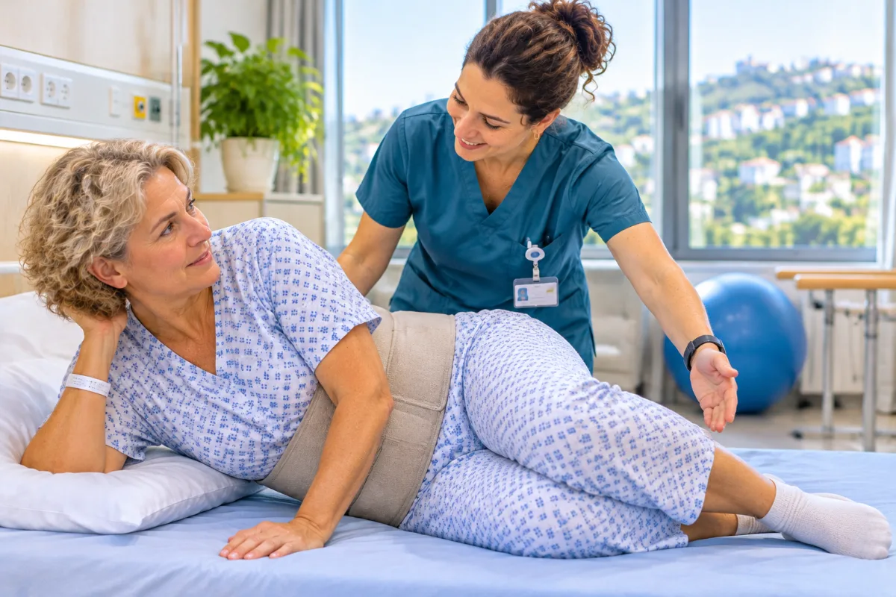
Как вставать после операции на позвоночникеПамятка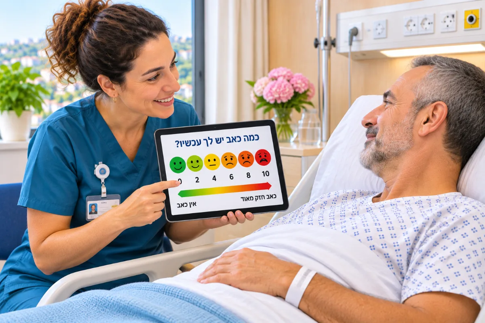
Боль после операции: обезболиваниеПамятка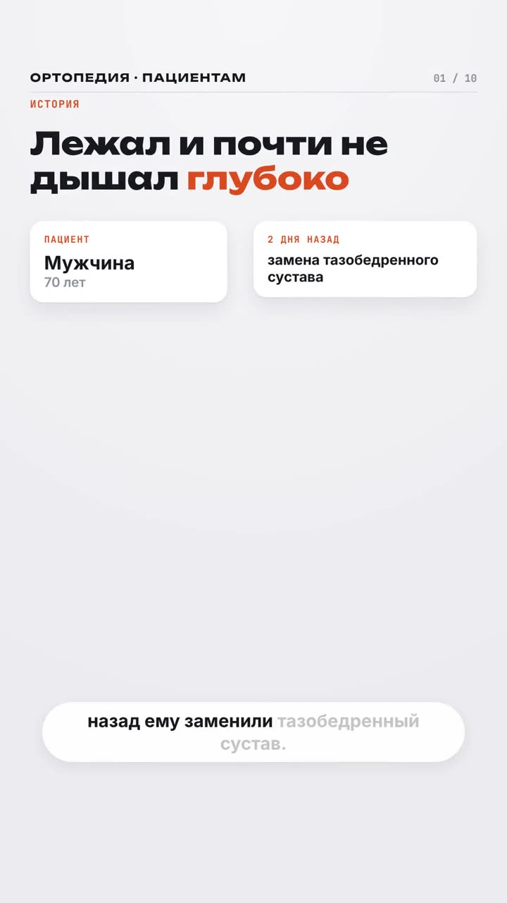
Дыхательные упражнения после операции▶ Видео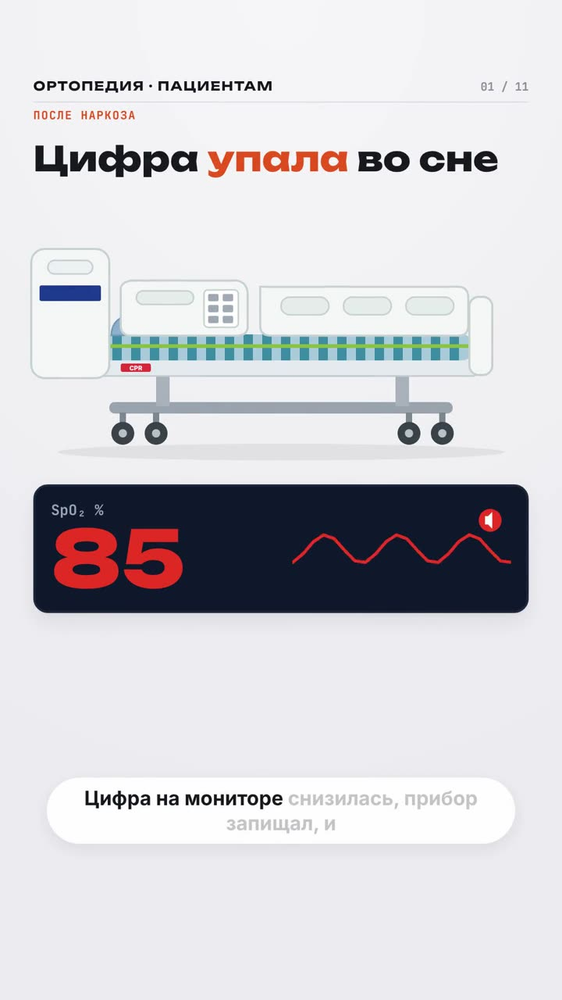
Насыщение крови кислородом (сатурация) во сне после наркоза▶ Видео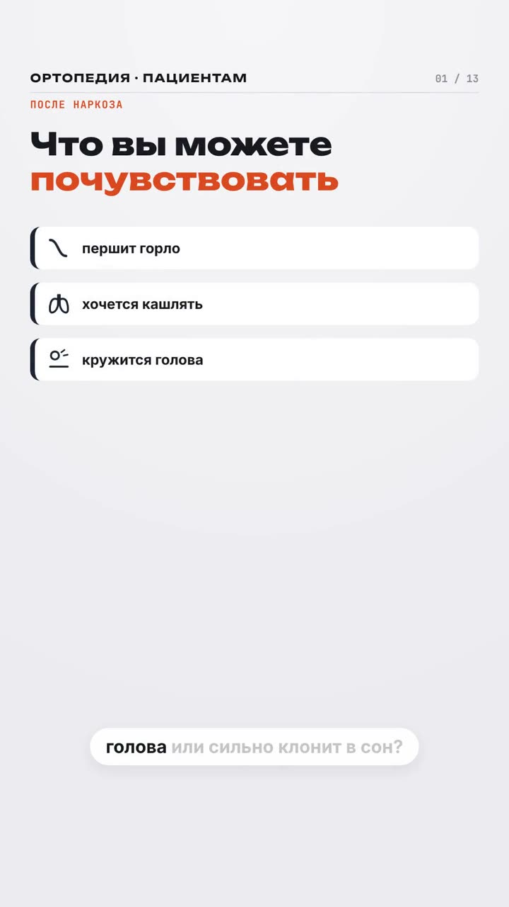
После общего наркоза: горло, сонливость, головокружение▶ ВидеоКак не упасть после операцииПамяткаХодунки: как ходить безопасноПамяткаСпутанность после операции (делирий)ПамяткаПеревязка послеоперационной раны: когда и чемПамяткаРазрыв твёрдой мозговой оболочки при операции на позвоночнике (дуротомия)ПамяткаРеабилитация (шикум)
חמישה שלבים, מההכנה ועד השיקום. פתחו את השלב שאתם צריכים.
הניתוח שלכם
בחרו את הניתוח שלכם. אם אינכם יודעים את שמו, שאלו את הרופא המטפל או את האחות.
הימים הראשונים אחרי הניתוח במחלקה
את הדף על דורוטומיה קראו רק אם הרופא סיפר לכם עליה.
איך לקום אחרי ניתוח בעמוד השדרהדף מידעכאב אחרי ניתוח: שיכוך כאביםדף מידע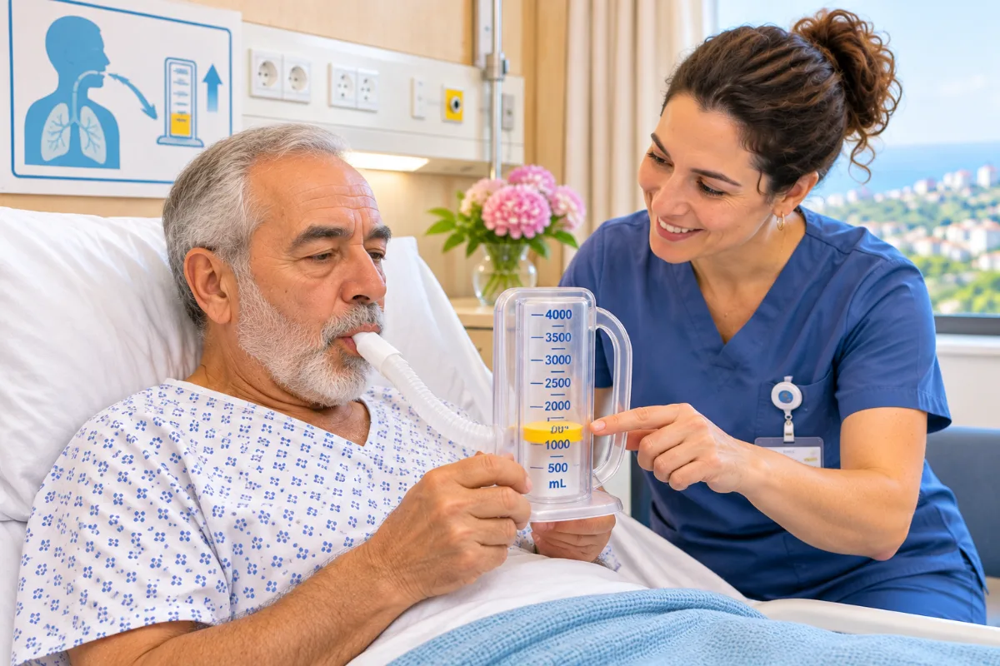
תרגילי נשימה אחרי ניתוחדף מידע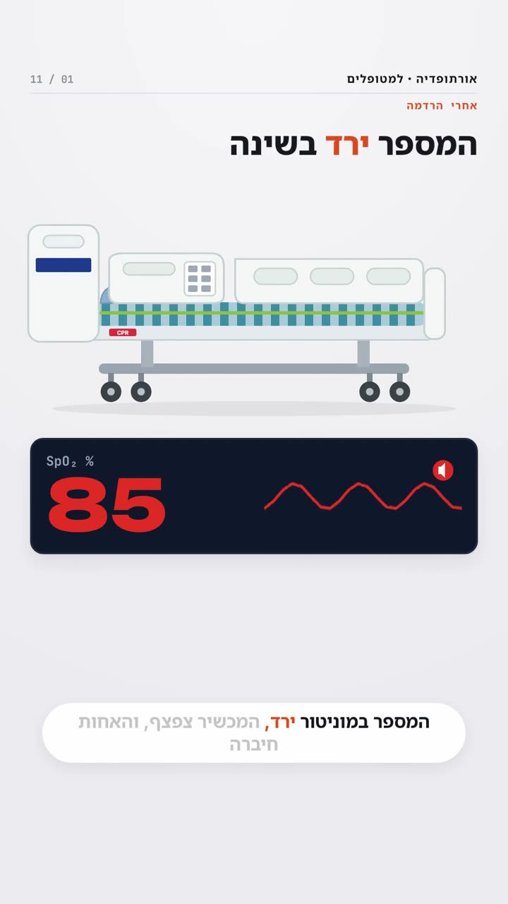
רוויון חמצן בשינה אחרי הרדמה, וחמצן▶ סרטון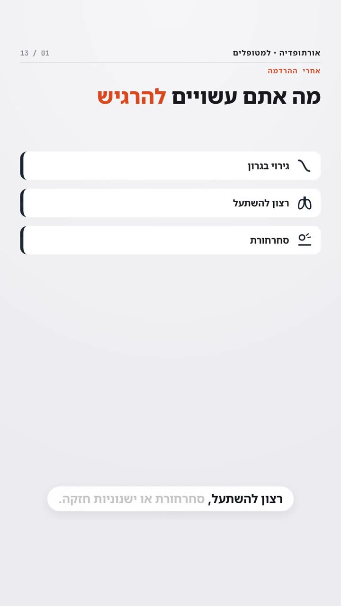
אחרי הרדמה כללית: גרון, ישנוניות, סחרחורת▶ סרטוןאיך לא ליפול אחרי ניתוחדף מידעהליכון: איך ללכת בבטחהדף מידע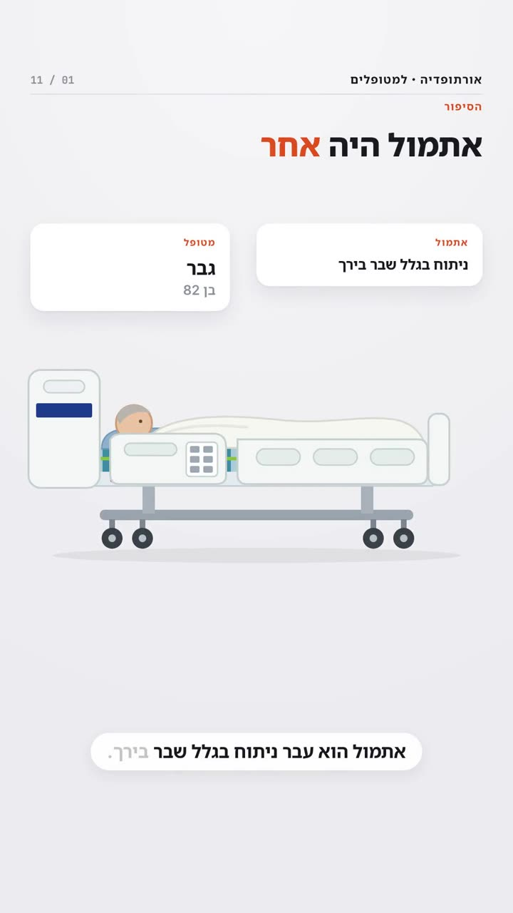
בלבול אחרי ניתוח (דליריום)▶ סרטוןהחלפת חבישה בפצע הניתוח: מתי ובמהדף מידעקרע בקרום הקשה (דורה) במהלך ניתוח בעמוד השדרה (דורוטומיה)דף מידע
خمس خطوات، من التحضير حتى إعادة التأهيل. افتحوا الخطوة التي تحتاجونها.
عمليتكم
اختاروا عمليتكم. وإذا كنتم لا تعرفون اسمها، فاسألوا الطبيب المعالج أو الممرضة.
الأيام الأولى بعد العملية في القسم
اقرؤوا صفحة تمزّق الأم الجافية فقط إذا أخبركم الطبيب بذلك.
النهوض بعد عملية العمود الفقريصفحة معلوماتالألم بعد العملية: التسكينصفحة معلوماتتمارين التنفّس بعد العمليةصفحة معلومات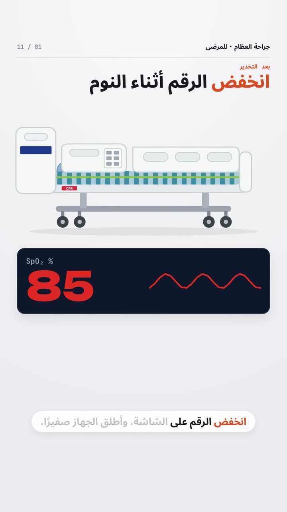
تشبّع الأكسجين أثناء النوم بعد التخدير، والأكسجين▶ فيديو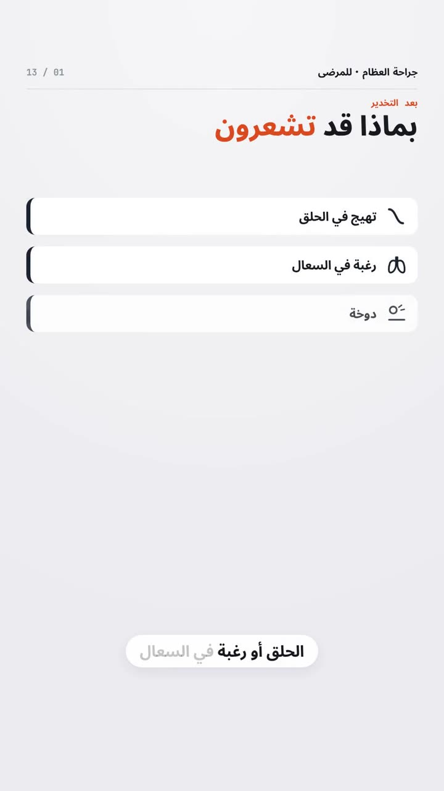
بعد التخدير العام: الحلق، النعاس، الدوخة▶ فيديوكيف تتجنّبون السقوط بعد العمليةصفحة معلوماتالمشّاية: كيف تمشون بأمانصفحة معلومات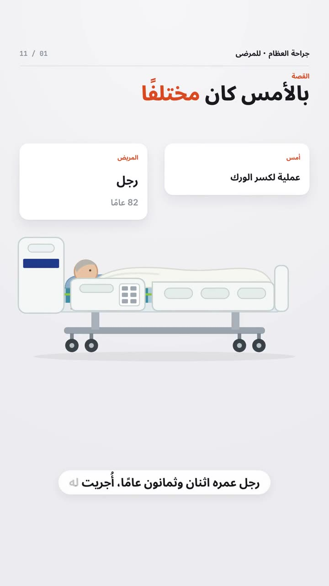
التشوّش بعد العملية (الهذيان)▶ فيديوتغيير ضمادة جرح العملية: متى وبماذاصفحة معلوماتتمزّق الأم الجافية أثناء جراحة العمود الفقري (بضع الجافية غير المقصود)صفحة معلوماتإعادة التأهيل
Five steps, from preparation to rehabilitation. Open the step you need.
Getting ready for surgery
Your operation
Choose your operation. If you don't know its name, ask your doctor or nurse.
The first days after surgery on the ward
Read the page about a dural tear only if your doctor has told you about it.
Getting up after spinal surgeryReadPain after surgery: pain reliefReadBreathing exercises after surgeryRead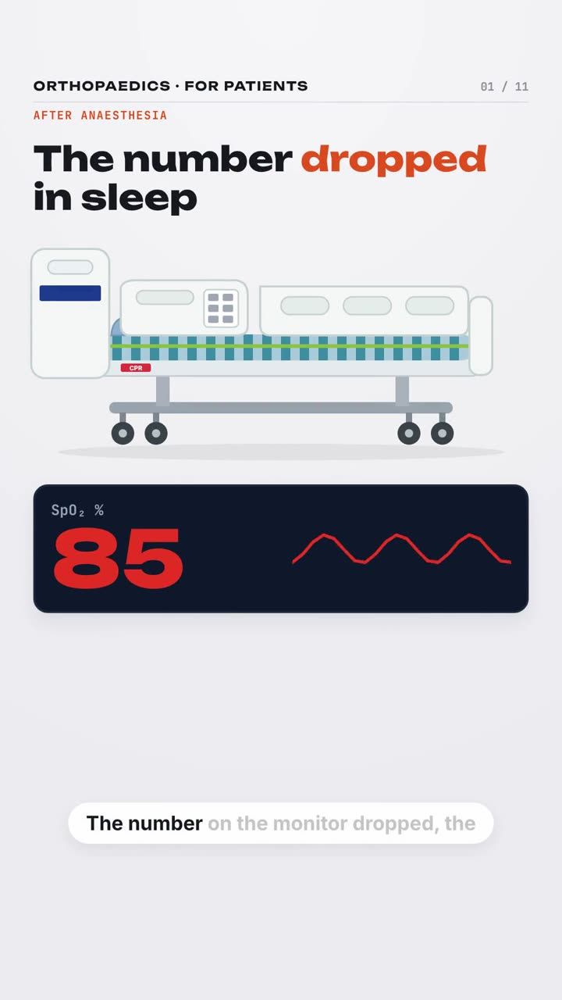
Oxygen saturation during sleep after anaesthesia, and oxygen▶ Video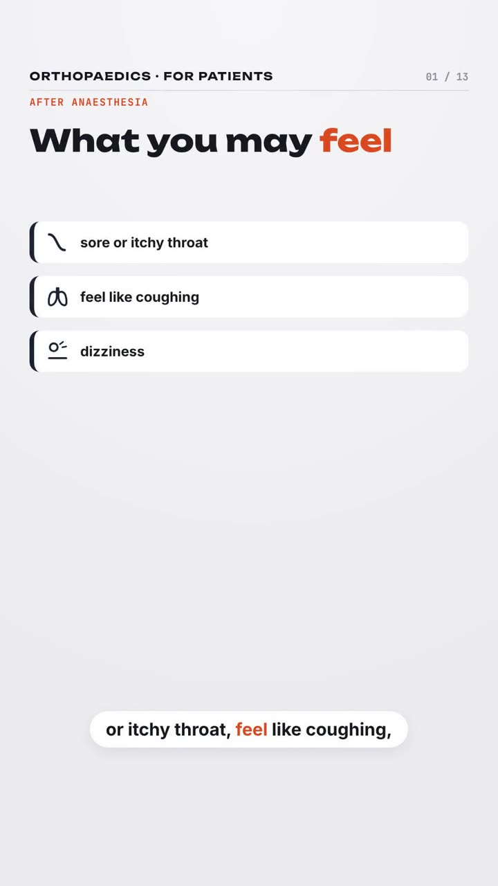
After general anaesthesia: throat, sleepiness, dizziness▶ VideoPreventing falls after surgeryReadWalking frame: how to walk safelyRead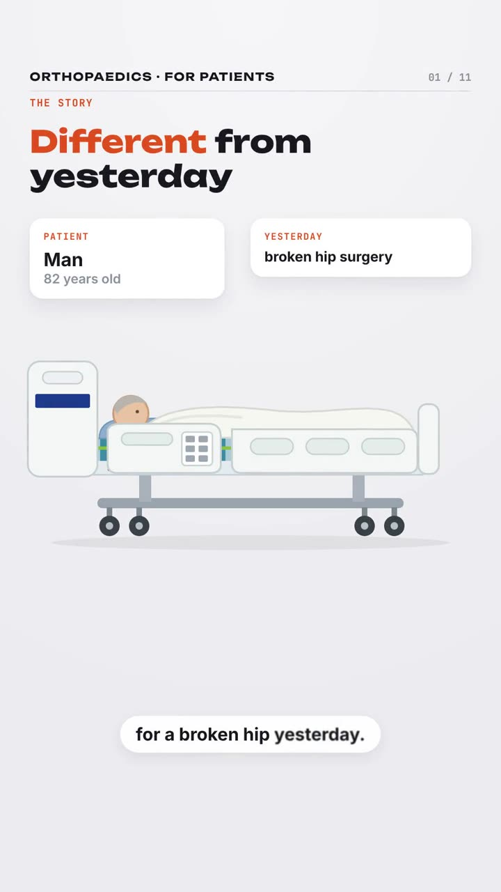
Confusion after surgery (delirium)▶ VideoChanging the dressing on a surgical wound: when and with whatReadTear in the dura during spine surgery (incidental durotomy)ReadRehabilitation